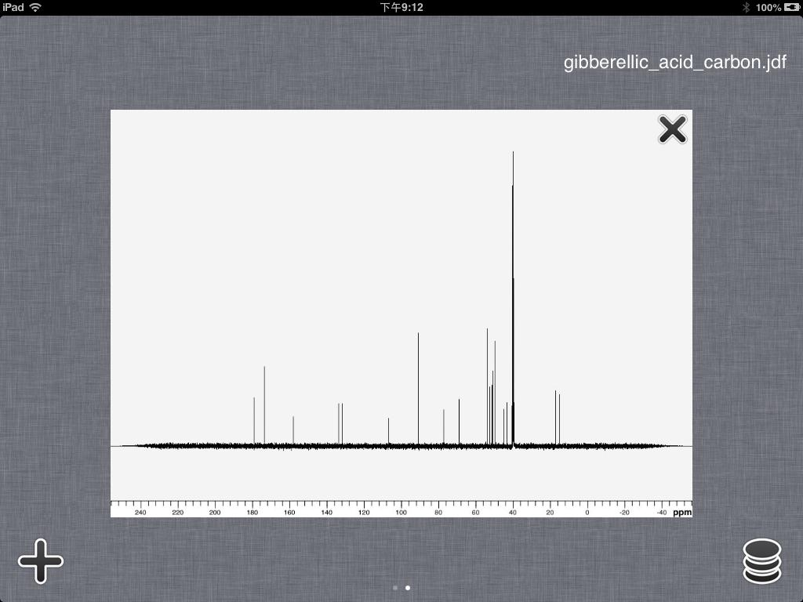
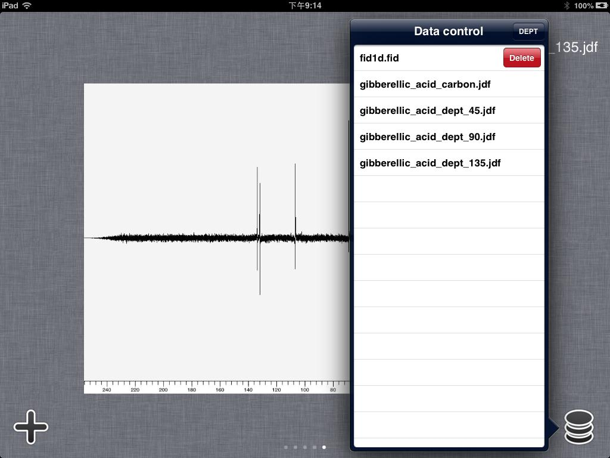
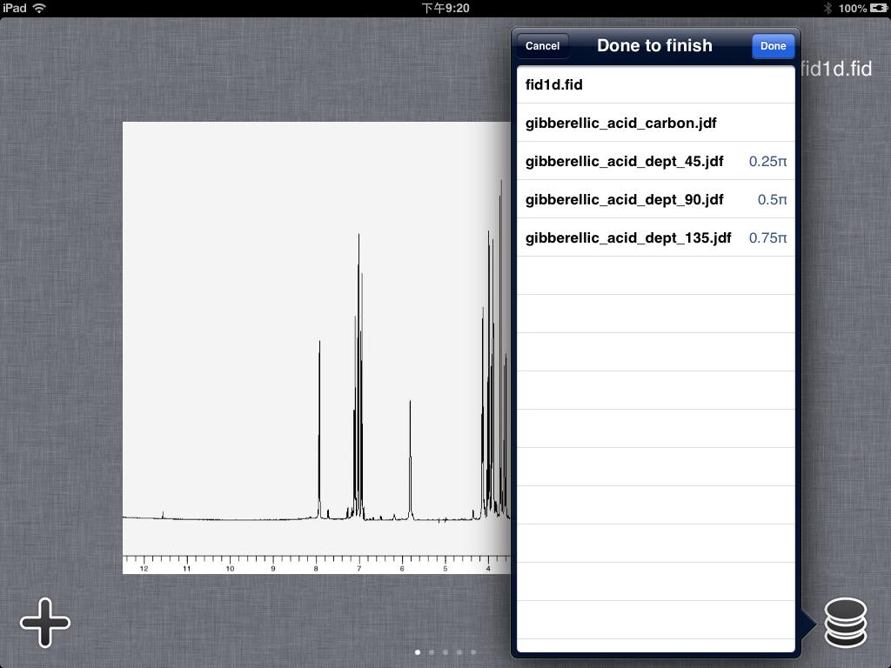
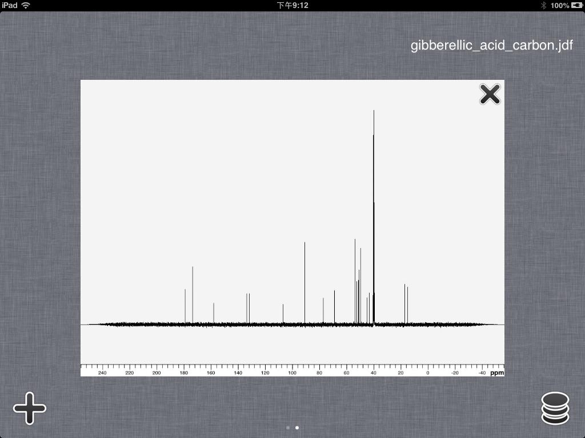
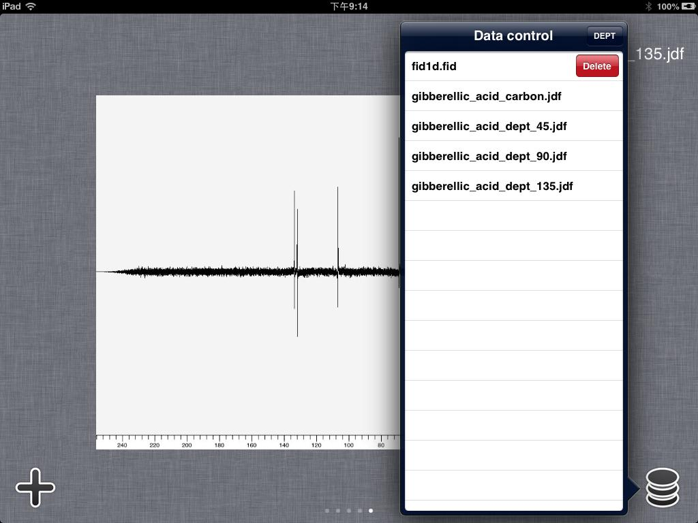
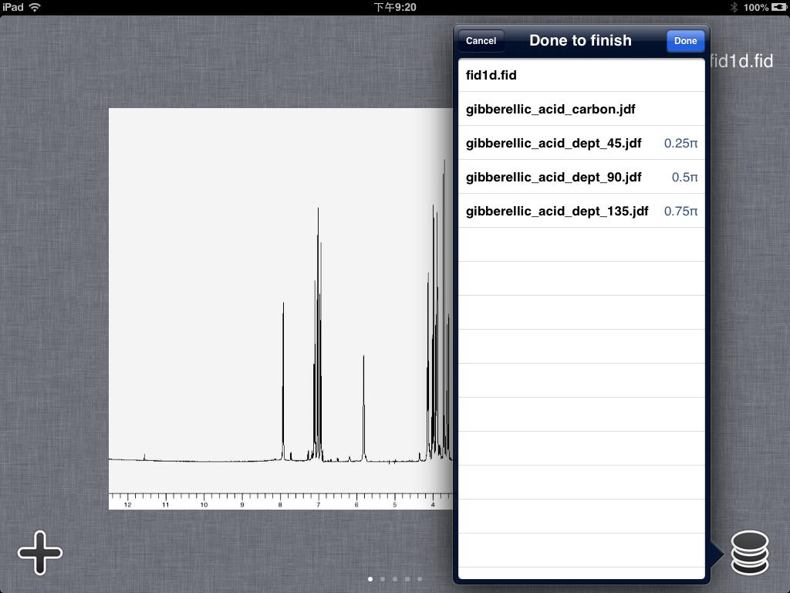

User Guide of Touch NMR
The function of "switch workspaces" has been introduced in version 1.2. By clicking the "Select workspace" icon in the upper left corner on the main toolbar to enter the workspace option perspective. As shown in figure 7.

Figure 7
Users can slide left and right or click on the page control button at bottom of the screen to switch workspaces. Users can switch to a certain workspace by clicking it. Clicking the "Delete" button in the upper right corner of the workspace, users can delete that workspace. Clicking the "Add" button in the lower left corner, the file system will be opened. Users can select and add new workspace.
There is also a "Control" icon at lower right corner. Users can select workspace by tapping the certain row and swiping to delete. As shown in figure 8.

Figure 8
Users can also generate DEPT spectrum by pressing the "DEPT" button. Then users should select the rows for 0.25π, 0.5π and 0.75π by order. The number of points in the three workspace should be the same. The parameters for 0.25π will be loaded to the new DEPT spectrum after press "Done" button. As shown in figure 9.

Figure 9

Figure 7
Users can slide left and right or click on the page control button at bottom of the screen to switch workspaces. Users can switch to a certain workspace by clicking it. Clicking the "Delete" button in the upper right corner of the workspace, users can delete that workspace. Clicking the "Add" button in the lower left corner, the file system will be opened. Users can select and add new workspace.
There is also a "Control" icon at lower right corner. Users can select workspace by tapping the certain row and swiping to delete. As shown in figure 8.

Figure 8
Users can also generate DEPT spectrum by pressing the "DEPT" button. Then users should select the rows for 0.25π, 0.5π and 0.75π by order. The number of points in the three workspace should be the same. The parameters for 0.25π will be loaded to the new DEPT spectrum after press "Done" button. As shown in figure 9.

Figure 9